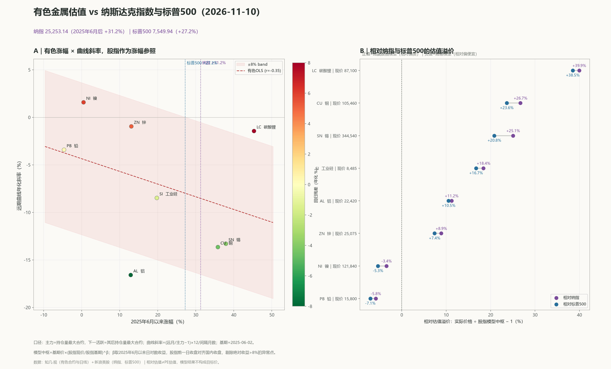

有色金属估值 vs 纳斯达克指数与标普500
纳指 25,253.14（2025年6月后 +31.2%）｜标普500 7,549.94（+27.2%）
基期：国内 2025-06-03、美股 2025-06-02｜最新：2026-11-10｜相对估值不是 PE，模型结果不构成目标价。

| 品种 | 当前主力 | 6月后涨幅 | 相对纳指 | 相对标普 | 远月年化斜率 |
|---|---|---|---|---|---|
| CU 铜 | 105,460 | +35.8% | +26.7% | +23.6% | -13.7% |
| AL 铝 | 22,420 | +12.9% | +11.2% | +10.5% | -16.6% |
| ZN 锌 | 25,075 | +13.1% | +8.9% | +7.4% | -1.0% |
| PB 铅 | 15,800 | -4.6% | -5.8% | -7.1% | -3.4% |
| NI 镍 | 121,840 | +0.5% | -3.4% | -5.3% | +1.6% |
| SN 锡 | 344,540 | +37.9% | +25.1% | +20.8% | -13.3% |
| LC 碳酸锂 | 87,100 | +45.3% | +39.9% | +38.5% | -1.4% |
| SI 工业硅 | 8,485 | +19.8% | +18.4% | +16.7% | -8.5% |